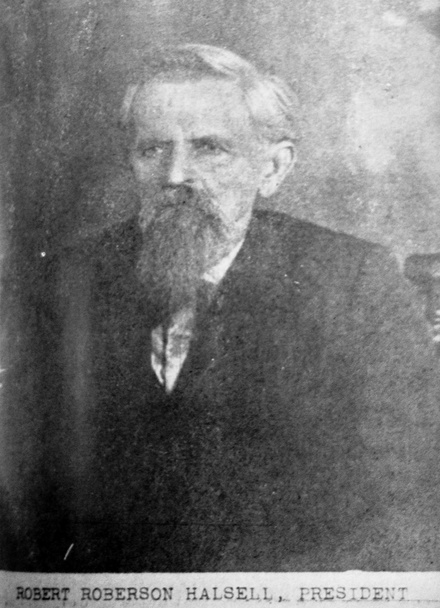
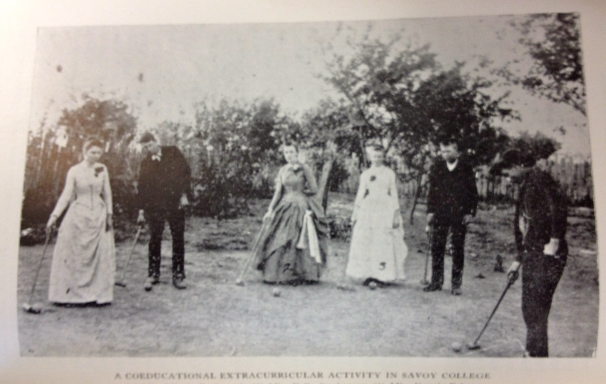

When Robert Roberson Halsell opened the doors of his new school in the spring of 1876, he had thirty-eight pupils and a vision large enough to fill a two-story building with a cupola. He planted that building on a two-and-a-half-acre plot on the south side of the young town of Savoy, in Fannin County, Texas — and what he built there over the next fourteen years was, by most accounts, one of the finer institutions of learning that North Texas had yet seen.

Founder, 1876
The school was formally incorporated as the Savoy Male and Female College. Its charter was granted January 22, 1880, naming Halsell and co-trustees James Paxton, J.B. Chenoweth, R.J. Abernathy, and Lewis Holland. In its first four years — before the charter was even filed — it had already been operating as a school serving the children of Savoy and the surrounding settlements. By the time the ink was dry on that charter, the college had grown into something altogether grander than a frontier schoolhouse.
Mattie Lee Boyd, who wrote the definitive history of the college in her 1939 University of Texas master's thesis, summed it up plainly: "Not only the people of Savoy and surrounding country enjoyed the services of its excellent teachers, but people came from far and wide over Texas and Indian Territory to seek knowledge within its walls."
A School Takes Shape
The physical campus was modest by eastern standards but ambitious for the Texas frontier. The main building was a two-story frame structure, its cupola visible from the main road through town. The grounds adjoined the southern edge of Savoy itself, close enough to town that students could walk to the post office, yet set apart enough to feel like a place dedicated to learning.
In 1877, a Baptist minister and scholar named Lewis Holland joined Halsell as Vice-President, and the two men proved a formidable pair. Halsell — energetic, outgoing, evangelical in his conviction about the value of education — taught Latin, Rhetoric, and Argumentation. He possessed the frontier preacher's gift of making people believe that something important was happening, because something important was. Holland was his counterweight: quieter, more reserved, "profoundly learned" in the recollection of those who studied under him. He taught Greek, Latin, and Mental and Moral Science, and served the college for its entire ten-year academic life.
Together they recruited a faculty that would have been at home in any respectable institution east of the Mississippi. The college offered a full Bachelor of Arts degree — the highest degree conferred was an A.B. — at a time when such credentials were rare in Fannin County. Its library was, in Boyd's estimation, "the complete first library of any school in Texas except the state university at Austin."

The Faculty

Beyond Halsell and Holland, the college assembled a faculty remarkable for its breadth. Professor Edward H. Pritchett joined in 1882 and taught Applied Mathematics and Natural Science until the college's final day in 1890. Professor Edward P. Montgomery — known to his students as "Pink" — taught Modern Languages. He had graduated from Vanderbilt University with honors in 1883, and after leaving Savoy went on to study medicine and become a physician.
Perhaps the most colorful faculty member was Madame Michely, who taught music. Of pure Spanish stock, born in Madrid, she could play guitar, violin, harp, and piano fluently in any key — an extraordinary presence in a town that had been a cattle trail only a decade before. Her presence on the faculty was a testament to the ambitions Halsell held for the place.
Student Life and Intellectual Culture


The intellectual life of the college extended well beyond the classroom. Two literary societies gave students organized venues for debate and oratory: the Platonian Society for older students, and the Philomathian Society for the younger. They published a student newspaper, The Platonian Messenger. They debated teams from Grayson College at Whitewright, representing Savoy in the larger world of Texas scholastic competition.
In January 1891 — after the fire, during the brief efforts to revive the school — the Squintum Dramatic Club ordered a 200-pound bell, which was presented to the school authorities on February 13, 1891, inscribed: "Presented to Savoy College By The Squintum Club." It was one last gesture of loyalty to an institution already lost.
Notable Students

The college drew students from a wide radius, including from Indian Territory to the north. Among the most notable were Smith Paul and Will Paul, brothers of Chickasaw heritage, and Moses Chipley, also Chickasaw, who went on to serve as a legislator. Frank Anderson, of Choctaw descent, arrived in 1886 at the age of thirteen, unable to speak a word of English. He graduated, went on to read law, and eventually served as a United States Deputy Marshal.
The most celebrated student the college ever produced, however, came near the very end. In 1890, a young man named George W. Truett took part in a debate at Savoy College — likely one of the last major events before the fire. He went on to become pastor of the First Baptist Church of Dallas, a pulpit he held for nearly fifty years. He became one of the most famous Baptist ministers in the world. He had his first taste of public speaking, it seems, in a schoolroom in Savoy, Texas.
The Fire of July 3, 1890

On the night of July 3, 1890, the Savoy Male and Female College burned to the ground. By that point it was one of the leading colleges in the region. The cause of the fire was never recorded in the sources that survive. The building was total loss.
Halsell spent two years trying to raise funds and revive the institution. He could not. The money did not come, and the moment had passed. He eventually left Texas, moved to Oklahoma, taught school there, and in time served in the Oklahoma state legislature. He died in Durant, Oklahoma, in 1924 — having outlived his greatest creation by more than thirty years.
Legacy and Remembrance
.jpg)
The alumni did not forget. In 1937, former students led by J.B. May and Prof. Ed A. McMahon organized the first Savoy College reunion. The next year, at the 1938 reunion, the new public school gymnasium in Savoy was dedicated as the Halsell Memorial Gymnasium — a lasting tribute to the man who had given the town its most lasting intellectual legacy.
In 1939, Mattie Lee Boyd completed her master's thesis at the University of Texas: History of Savoy Male and Female College, 1876–1890. It remains the most thorough account of the college ever written, and most of what is known about the institution today descends from her research.
The reunions continued. In 1967, the annual gathering was held for what may have been the last time. Only one surviving former student was present: Mrs. Alpha Deatherage Jenkins, of Savoy, Texas. She was the last person alive who had actually sat in those classrooms, heard those lectures, walked those grounds. When she was gone, the living memory of the Savoy Male and Female College went with her.
"Not only the people of Savoy and surrounding country enjoyed the services of its excellent teachers, but people came from far and wide over Texas and Indian Territory to seek knowledge within its walls."Story of Savoy
— Mattie Lee Boyd, History of Savoy Male and Female College, 1876–1890 (1939)